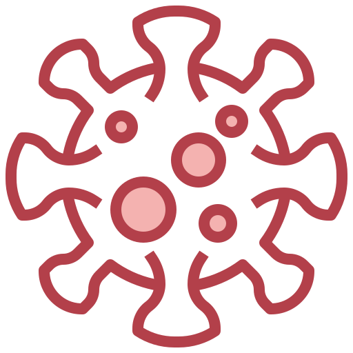

A
A
Home
Test your health
COVID-19 Poland
COVID-19 World
Get the latest information and notifications about COVID-19
Follow global map of COVID-19 disease or test your health
Move to global map
Take a health test
